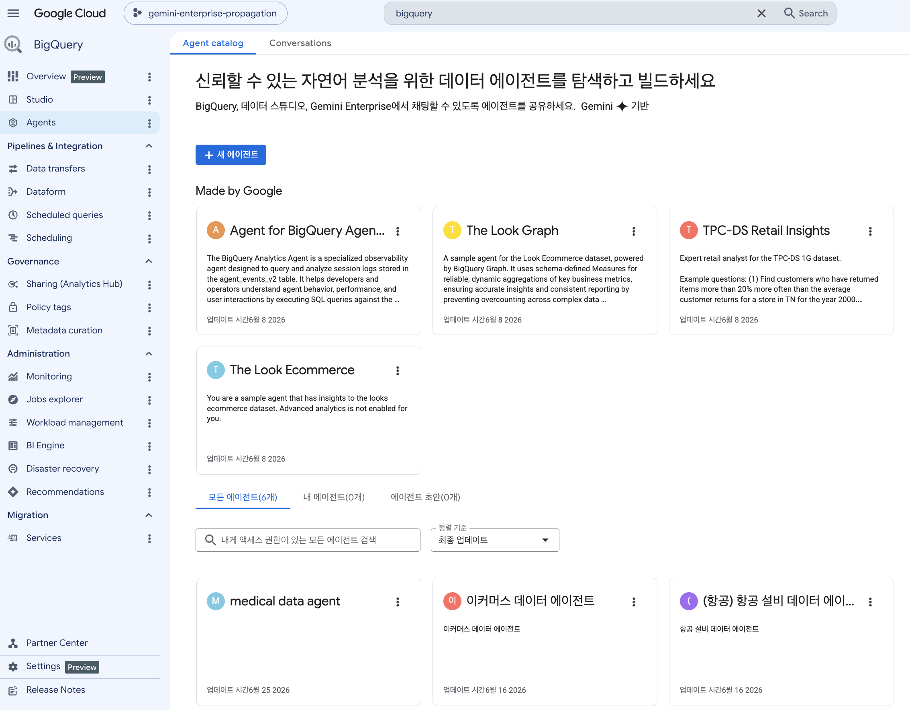
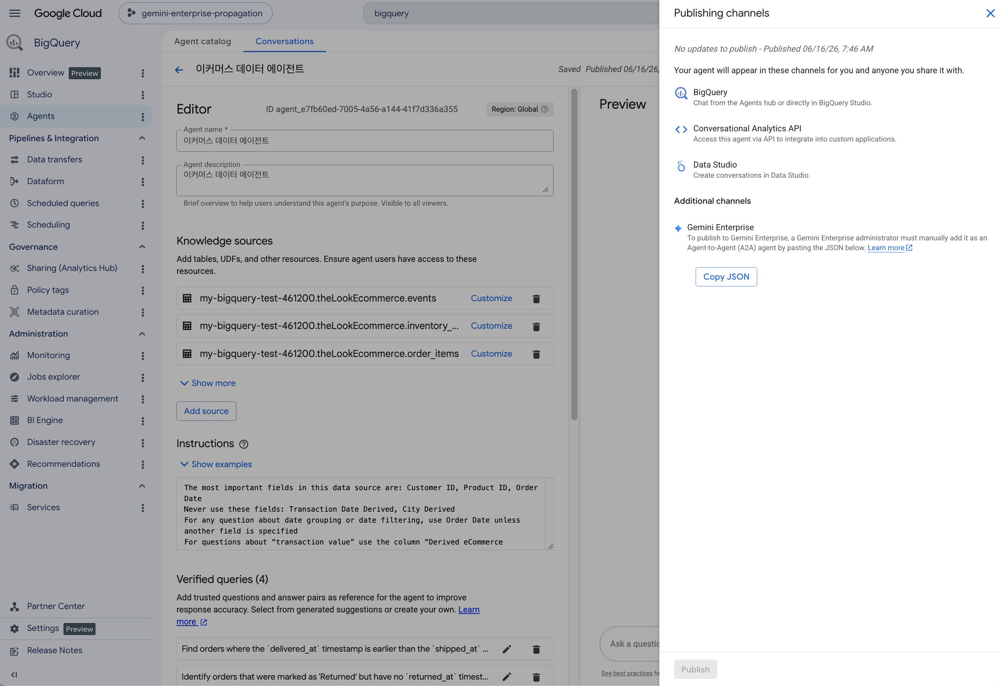
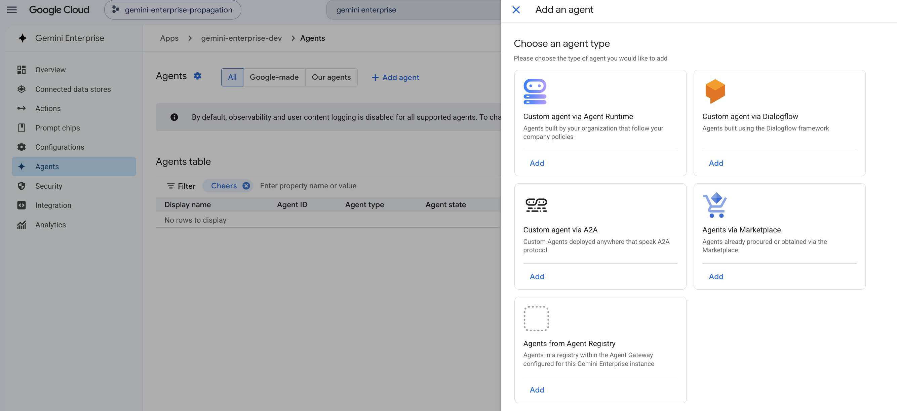
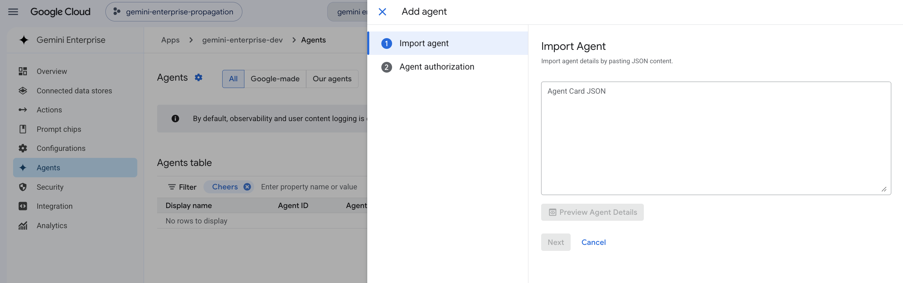

BigQuery
Conversational Analytics Agent
복잡한 SQL 구문을 알 필요 없이, 자연어 대화를 통해 BigQuery 데이터를 조회하고 분석할 수 있는 에이전트를,Gemini Enterprise App과 연동해 보세요!
NL-to-SQL
자연어 질의를 고성능 SQL로 자동 변환하여 데이터 엔지니어 대기 시간 Zero화
GCP IAM & 보안 승계
OAuth 커넥터 기반으로 사용자 본인의 IAM 권한을 전달하여 엄격한 보안 유지
Knowledge Catalog Grounding
전사 표준 메타데이터 및 Verified Queries 기반으로 정합성 있는 SQL 실행
Description & Key Pillars
Gemini Enterprise에 연동된 BigQuery Conversational Agent는 사용자가 SQL을 배우지 않아도,일상적인 자연어로 질문하면 즉각적으로 지능적 쿼리를 실행하고 검증된 인사이트를 제공합니다.
분석 대기 시간 단축
수일 이상 소요되던 데이터 분석 및 리포트 작성 대기 시간을 수초~수분 단위로 단축하여 의사결정 속도를 끌어올립니다.
전사 데이터 민주화
데이터 엔지니어링 지식이 없어도 비즈니스 담당자 누구나 데이터에 접근하고 즉각 탐색할 수 있는 데이터 문화 구축합니다.
검증된 정확성 & 맥락
System Instructions 및 Knowledge Catalog 기반 메타데이터 Grounding를 통해 SQL 오류 및 환각을 최소화합니다.
Technical Architecture
Gemini Enterprise App(GE App)의 대화형 인터페이스와 BigQuery Studio의 데이터 에이전트 엔진이 A2A(Agent-to-Agent) 및 OAuth IAM 체계로 밀접하게 결합된 아키텍처입니다.
1. GE App UI
- • 비즈니스 사용자 대화 인터페이스
- • OAuth Token 및 사용자 Identity 보유
- • 대화형 에이전트 호스팅 인터페이스
2. GE App & A2A
- • A2A (Agent-to-Agent) 프로토콜 프로비저닝
- • Admin 승인 및 사용자 그룹별 권한 제어
- • 안전한 Context & Query 전달
3. BQ CA Engine
- • NL-to-SQL 변환 엔진
- • System Instructions & Verified Queries
- • Knowledge Catalog 용어 기반 Grounding
4. BigQuery & Audit
- • BigQuery 테이블, 뷰 실행
- • 사용자 IAM 권한 검증
- • BigQuery Audit Log (Job History) 추적
Gemini Enterprise App 연동 및 사용 프로세스 (전체 4단계 화면 가이드)
1단계: BigQuery Studio에서 대화형 에이전트 생성 및 지식 소스 설정
BigQuery Studio 'Agent Catalog' 메뉴에서 대화형 에이전트를 생성하고,분석 대상이 될 테이블 및 뷰를 지식 소스로 지정합니다.
System Instructions(시스템 지침)을 등록하고 자주 사용하는 쿼리를 Verified Queries로 설정하여 답변 정확도를 극대화합니다.

[화면 1] BigQuery Agent Overview 콘솔
bigquery-agent-overview.png (클릭 시 확대)

[화면 2] BigQuery Agent 지침/검증쿼리 편집
bigquery-agent-edit.png (클릭 시 확대)
2단계: Gemini Enterprise A2A 에이전트 연동 및 JSON 스키마 명세
Gemini Enterprise 관리 콘솔에서 A2A (Agent-to-Agent) 에이전트를 등록 및 사용 권한을 프로비저닝합니다.
BigQuery에서 정의된 에이전트의 OpenAPI 및 Agent JSON 스키마 명세를 검증하고 설정을 완료합니다.
에이전트를 활용할 특정 비즈니스 사용자 그룹 혹은 개별 사용자에게 접근 권한 공유.

[화면 3] Gemini Enterprise A2A 연동 콘솔
ge-agent-a2a.png (클릭 시 확대)

[화면 4] Gemini Enterprise Agent JSON 스키마
ge-agent-json.png (클릭 시 확대)
3단계: Gemini Enterprise 대화창에서 자연어로 데이터 활용
Gemini Enterprise 대화 창에서 업무 중 궁금한 점을 자연어로 질의합니다.
예시: "지난달 품목별 평균 판매 가격이 가장 높았던 장비는 무엇인가요?"
에이전트가 변환한 최적의 BigQuery SQL이 실행되어 시각적 테이블과 핵심 인사이트 요약 결과가 대화창에 즉시 제공됩니다.
Prompt Samples & Examples
Gemini Enterprise 대화창에 직접 입력하여 사용할 수 있는 추천 프롬프트 및 대화 시작 가이드입니다.
어떤 질문을 던져야 할지 모를 때
즉각적인 핵심 지표 & Top-N 집계
미래 트렌드 & 수요 예측 차트
Live Demo Walkthrough & Included Agents
본 가이드 문서 및 시뮬레이션 환경에 탑재된 특화 Demo Agent 구성과 실제 작동 데모 영상입니다.
탑재된 비즈니스 특화 Demo Agent
해당 HTML 가이드 및 연동 환경에 포함된 Demo Agent는 산업별 실무 데이터를 즉각 분석할 수 있도록 다음 3가지 특화 모델로 제공됩니다:
(CA-Table) 제약
임상 데이터, 의약품 재고, 생산 품질 및 규제 준수(Compliance) 지표를 자연어로 정밀 분석하는 제약 특화 에이전트.
(CA-Table) 이커머스
고객 주문 트렌드, 장바구니 전환율, 품목별 매출 및 물류/배송 지연 지표를 즉각 진단하는 유통/이커머스 에이전트.
(CA-Table) 항공
노선별 정시 운송률(OTP), 항공기 정비 주기, 승객 예약 현황 및 연료 효율 데이터를 종합 분석하는 항공 산업 특화 에이전트.
BigQuery CA Agent 동작 데모 영상
아래 플레이어에서 실제 Gemini Enterprise 대화창 및 BigQuery CA Agent의 실시간 질의응답 시연 영상을 확인하실 수 있습니다.